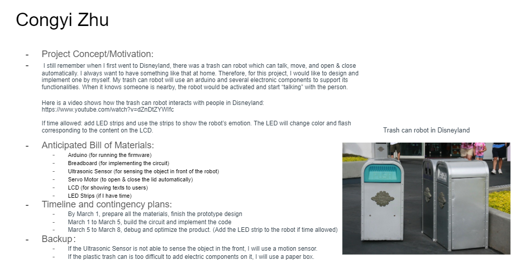
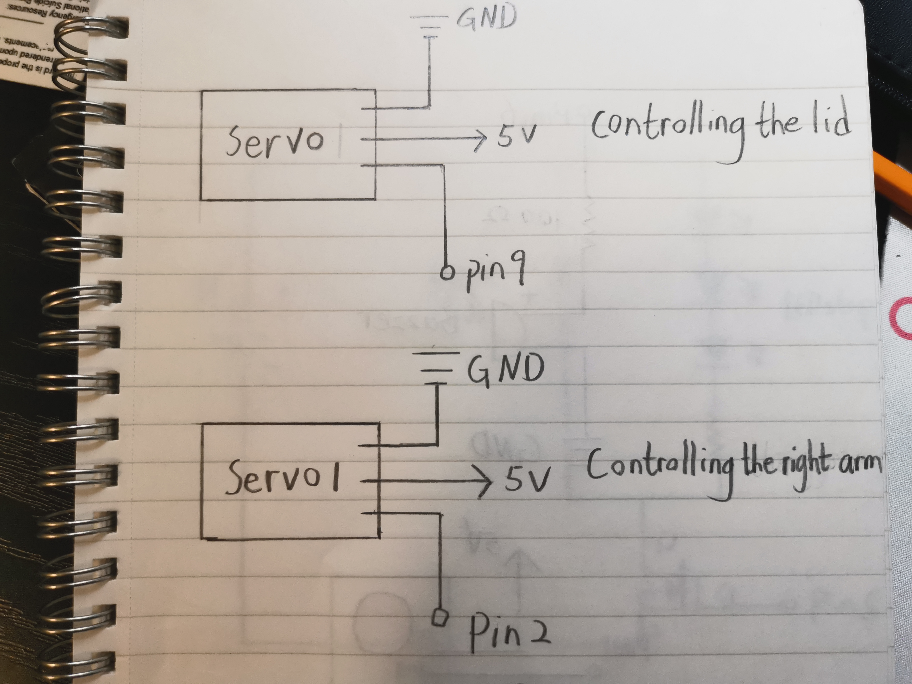

Congyi's Final Project!
Proposal:

Concept:
Inspired by the Trash Can Robot in Disneyland, I was planning to make something which brings happiness to people! My robot is highly interactive and waiting for users to explore what song he can sing and what interaction he will make based on gesture inputs. Moving closer or farther to him can lead to different feedbacks. Therefore, wave at different distances to see various responses!
Technical Implementation Details:
Key Electronic components - 5v battery, ultrasonic sensor, servo motors, buzzer, LED strip, transistor
Arduino Library - Servo, ezBuzzer
Since the robot contains a lot of features, I implemented them one by one and combine all of them together at the end:
Implementation Sequence - Ultrasonic sensor -> Servo for opening and closing the lid -> Buzzer -> Servos use as his arms -> LED strip -> combine all the features together.
Circuit:
Becasue I added a lot of electronic components on my breadboard, it may look messy. If you want to reproduce my work, please follow the schematic.
Schematic:
Servo Motors:

Buzzer:
The 100-ohm resistor was added to keep the full volume of the buzzer and remove the “sharpness” from the sound.
Ultrasonic Sensor:

LED Strip:

Calculation: the drain current of the transistor is 32A. According to the datasheet of the Lepro 5M LED Strip Lights, at the back of the package, the watt at 12V is 16 watts. Therefore, the current is 16 W / 12V = 1.3 A. Since I am using a 9V battery as power, the LEDs will not be as bright as the 12V powered ones. In this case, the current will be smaller than 1.3 A which is safe to connect with a transistor. The flyback diode was added to aviod sudden voltage spikes.
Firmware:
Here is all the code needed to run my Trash Can Robot. Make sure you download and installed the Servo and ezBuzzer before running the program!
Ardunio File:
#include
#include
#define TRANSISTOR_PIN 5 // define the transistor pin to pin 5
// constants won't change
const int TRIG_PIN = 11; // Arduino pin 9 connected to Ultrasonic Sensor's TRIG pin
const int ECHO_PIN = 12; // Arduino pin 9 connected to Ultrasonic Sensor's ECHO pin
const int SERVO_PIN = 9; // Arduino pin 9 connected to Servo Motor's pin
const int DISTANCE_THRESHOLD_1 = 60; // Set the distance threshold 1 to 60 centimeters
const int DISTANCE_THRESHOLD_2 = 10; // Set the distance threshold 2 to 10 centimeters
const int DISTANCE_THRESHOLD_3 = 100; // Set the distance threshold 3 to 100 centimeters
// Define the melody of Brother John as notes1
int notes1[] = {262, 294, 330, 262, 262, 294, 330, 262, 330, 349, 392, 330, 349, 392};
// Define the duration for each note in notes1
int durations1[] = {200, 200, 200, 200, 200, 200, 200, 200, 200, 200, 200, 200, 200, 200};
// Define the melody of Birthday Song as notes2
int notes2[] = {262, 262, 294, 262, 349, 330, 262, 262,
262, 294, 262, 392, 349, 262, 262, 262,
440, 392, 349, 330, 294, 466, 466, 440,
349, 392, 262};
// Define the duration for each note in notes2
int durations2[] = {4, 4, 8, 8, 8, 2, 4, 4,
4, 4, 8, 8, 8, 2, 4, 4,
4, 4, 8, 8, 8, 2, 4, 4,
4, 4, 8}; // Durations of the notes in beats
// Define the melody of Twinkle Twinkle Little Star as notes3
int notes3[] = {NOTE_C4, NOTE_C4, NOTE_G4, NOTE_G4, NOTE_A4, NOTE_A4, NOTE_G4, NOTE_F4, NOTE_F4, NOTE_E4, NOTE_E4, NOTE_D4, NOTE_D4, NOTE_C4};
// Define the duration for each note in notes3
int durations3[] = {4, 4, 4, 4, 4, 4, 2, 4, 4, 4, 4, 4, 2, 4};
const int buzzerPin = 6; // Arduino pin 6 connected to buzzer
Servo servo; // create servo object to control a servo
Servo servo1; // create servo object to control the servo 1
Servo servo2; // create servo object to control a servo 2
int servo1Position = 0; // starting position of servo 1
int servo2Position = 0; // starting position of servo 2
// variables will change:
float duration_us, distance_cm;
void setup() {
// Initialize the serial connection
Serial.begin (9600); // initialize serial port
pinMode(TRIG_PIN, OUTPUT); // set arduino pin to output mode
pinMode(ECHO_PIN, INPUT); // set arduino pin to input mode
servo.attach(SERVO_PIN); // attaches the servo on pin 9 to the servo object
servo.write(0); // set the servo to 0
pinMode(buzzerPin, OUTPUT); // set the buzzerPin as an output
servo1.attach(2); // attach servo 1 to pin 2
servo2.attach(3); // attach servo 2 to pin 3
pinMode(TRANSISTOR_PIN, OUTPUT); // set the transistor pin as an output
analogWrite(TRANSISTOR_PIN, 100); // Write the brightness of LED strip to 100
}
void loop() {
// put your main code here, to run repeatedly:
// generate 10-microsecond pulse to TRIG pin
digitalWrite(TRIG_PIN, HIGH); // Set TRIG_PIN HIGH
delayMicroseconds(10); // Wait for 10 microseconds
digitalWrite(TRIG_PIN, LOW); // Set TRIG_PIN LOW
// measure duration of pulse from ECHO pin
duration_us = pulseIn(ECHO_PIN, HIGH);
// calculate the distance
distance_cm = 0.017 * duration_us;
// if the distance detected by the sensor is between threshold 1 and threshold 2
if (distance_cm < DISTANCE_THRESHOLD_1 && distance_cm > DISTANCE_THRESHOLD_2) {
// run 14 times
for (int i = 0; i < 14; i++) {
tone(buzzerPin, notes1[i]); // let the buzzer sing the melody in notes1
delay(durations1[i]); // wait for the buzzer to sing the tone
noTone(buzzerPin); // stop the node
// add 10 until the postion of servo 1 reaches 180
for (servo1Position = 0; servo1Position <= 180; servo1Position += 10) {
servo1.write(servo1Position); // Set the servo 1 position
delay(10); // Wait for the servo to reach the position
servo.write(120); // rotate servo motor to 120 degree
}
// minus 10 until the postion of servo 2 reaches 180
for (servo2Position = 180; servo2Position >= 0; servo2Position -= 10) {
servo2.write(servo2Position); // Set the servo 2 position
delay(10); // Wait for the servo to reach the position
}
// minus 10 until the postion of servo 1 reaches 180
for (servo1Position = 180; servo1Position >= 0; servo1Position -= 10) {
servo1.write(servo1Position); // Set the servo 1 position
delay(10); // Wait for the servo to reach the position
}
// add 10 until the postion of servo 2 reaches 180
for (servo2Position = 0; servo2Position <= 180; servo2Position += 10) {
servo2.write(servo2Position); // Set the servo 2 position
delay(10); // Wait for the servo to reach the position
servo.write(0); // rotate servo motor to 0 degree
}
// start from 0, increase i by 1 until the number reaches 100
for (int i = 0; i <=100; i++) {
analogWrite(TRANSISTOR_PIN, i); // set the brightness of LED strip to i
delay(2); // wait 2 millisecond
}
}
}
// if the distance detected by the sensor is smaller than distance threshold 2
if (distance_cm < DISTANCE_THRESHOLD_2) {
servo.write(120); // rotate servo motor to 120 degrees
// run the following code based on the the number of elements in notes2
for (int i = 0; i < sizeof(notes2) / sizeof(notes2[0]); i++) {
// start from 100, decrease i by 1 until the number reaches 0
for (int i = 100; i >=0; i--){
analogWrite(TRANSISTOR_PIN, i); // write the brightness of LED strip to i
delay(2); // wait 2 milliseconds
}
int noteDuration = 1000 / durations2[i]; // Compute the value of noteDuration
tone(buzzerPin, notes2[i], noteDuration); // Play the note on the piezo buzzer
delay(noteDuration * 1.30); // Wait for the duration plus a small pause
noTone(buzzerPin); // Stop the note
// start from 0, increase i by 1 until the number reaches 100
for (int i = 0; i <=100; i++){
analogWrite(TRANSISTOR_PIN, i); // write the brightness of light strip to i
delay(2); // wait 2 milliseconds
}
}
// repeat the following code for 5 times
for (int i = 0; i < 5; i++) {
// add 10 until the postion of servo 1 reaches 180
for (servo1Position = 0; servo1Position <= 180; servo1Position += 10) {
servo1.write(servo1Position); // Set the servo 1 position
delay(10); // Wait for the servo to reach the position
}
// minus 10 until the postion of servo 2 reaches 180
for (servo2Position = 180; servo2Position >= 0; servo2Position -= 10) {
servo2.write(servo2Position); // Set the servo 2 position
delay(10); // Wait for the servo to reach the position
}
// minus 10 until the postion of servo 1 reaches 180
for (servo1Position = 180; servo1Position >= 0; servo1Position -= 10) {
servo1.write(servo1Position); // Set the servo 1 position
delay(10); // Wait for the servo to reach the position
}
// add 10 until the postion of servo 2 reaches 180
for (servo2Position = 0; servo2Position <= 180; servo2Position += 10) {
servo2.write(servo2Position); // Set the servo 2 position
delay(10); // Wait for the servo to reach the position
}
}
servo.write(0); // rotate the servo to 0 degree
}
// if the detected distance is between thresholde 1 and threshold 3
if (distance_cm > DISTANCE_THRESHOLD_1 && distance_cm < DISTANCE_THRESHOLD_3) {
servo.write(120); // rotate servo motor to 120 degree
// run the following code based on the the number of elements in notes3
for (int i = 0; i < sizeof(notes3) / sizeof(notes3[0]); i++) {
int noteDuration = 1000 / durations3[i]; // Compute the value of noteDuration
tone(buzzerPin, notes3[i], noteDuration); // Play the note on the piezo buzzer
delay(noteDuration * 1.30); // Wait for the duration plus a small pause
noTone(buzzerPin); // Stop the note
}
// run the following code for 5 times
for (int i = 0; i < 5; i++) {
// start from 100, decrease i by 1 until the number reaches 0
for (int i = 100; i >=0; i--){
analogWrite(TRANSISTOR_PIN, i); // write the brightness of LED strip to i
delay(10); // wait 10 milliseconds
}
// start from 0, increase i by 1 until the number reaches 100
for (int i = 0; i <=100; i++) {
analogWrite(TRANSISTOR_PIN, i); // write the brightness of LED strip to i
delay(10); // wait 10 milliseconds
}
}
servo.write(0); // rotate the servo motor to 0 degree
}
// print the value to Serial Monitor
Serial.print("distance: "); // print "distance: " in the serial monitor
Serial.print(distance_cm); // print the number of distance detected by the ultrasonic sensor
Serial.println(" cm"); // print " cm" in the serial mnonitor
delay(500); // wait 500 milliseconds
}
Demo Video: